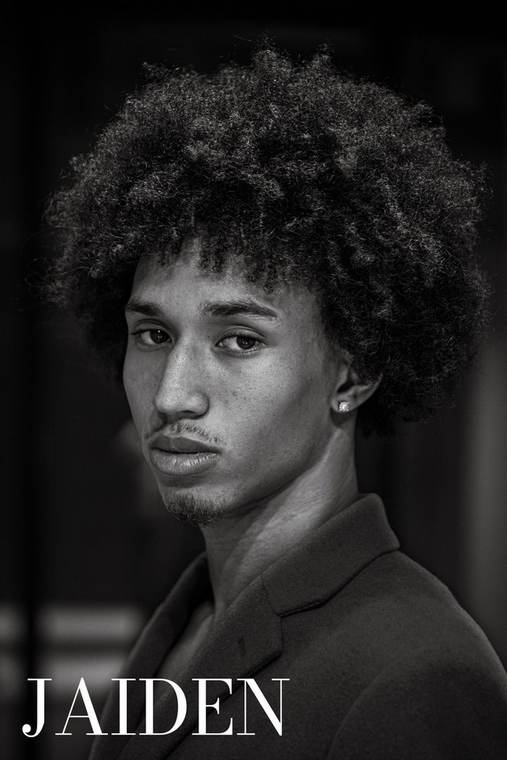
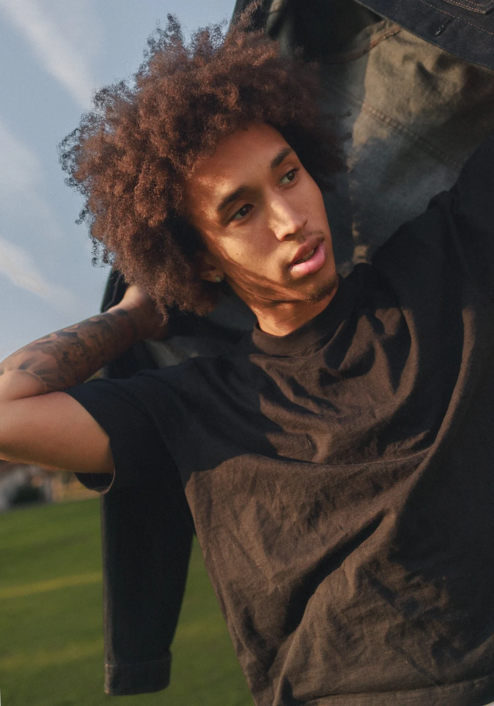

01 / 08
A DIFFERENT COVER EVERY VISIT
01 / THE MANY SIDES OF JOHow do you
How do you
see me?
One face. Different worlds.
Swipe to explore.
01 / 03Explore fashion
02 / PORTFOLIO
Full image indexSelected work.
03 / COMMERCIALPSD ×
PSD ×
Space Jam.
THE COMMERCIAL / 00:17
04 / IMAGE INDEX
77 IMAGESThe archive.
05 / CASTING
Casting roomThe card.

MODEL PROFILE / LA · NYJaiden
Download comp card ↓Booking inquiry
Jaiden
Ortiz.
Height5′11″ / 180 cm
Chest37″ / 94 cm
Waist30″ / 76 cm
Inseam31″ / 79 cm
Neck15″ / 38 cm
Suit36R
Shoe10.5 US
HairBrown
EyesDark brown

CURRENT DIGITALS

06 / ABOUTJaiden
Jaiden
Ortiz.
Model based in Los Angeles, originally from New York. Working across fashion, editorial, runway and commercial campaigns.
Get in touch